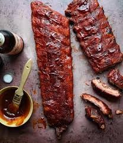

BBQ Ribs

Description
BBQ ribs are a mouthwatering delight, featuring tender, slow-cooked pork ribs that are generously coated with a smoky,
tangy barbecue sauce. The ribs are grilled to perfection, allowing the sauce to caramelize and create a rich,
sticky glaze that enhances the deep, savory flavors of the meat. Each bite reveals fall-off-the-bone tenderness,
with a perfect balance of sweet, smoky, and spicy notes. Often served with a side of creamy coleslaw, baked beans,
or cornbread, BBQ ribs are the ultimate comfort food for any barbecue lover. Whether enjoyed at a backyard cookout or a casual dinner,
they deliver a hearty and flavorful experience that's hard to resist.
Ingredients
- 2 ½ pounds country-style pork ribs
- 2 tablespoons kosher salt
- 1 tablespoons garlic powder
- 1 teaspoon ground black pepper
- 1 cup barbecue sauce
Steps to make a BBQ ribs
- Gather all ingredients.
- Place ribs in a large pot and cover with water. Stir in kosher salt, garlic powder,
and pepper, and bring water to a boil over medium heat. Continue to boil until ribs are tender,
40 to 45 minutes.
- While the ribs are boiling, preheat the oven to 325 degrees F (165 degrees C).
- Remove ribs from the pot, and place them in a 9x13-inch baking dish. Pour barbecue sauce over ribs. Cover
the baking dish with aluminum foil.
- Bake in the preheated oven until the internal temperature of the pork has reached 160 degrees F (70 degrees C),
1 to 1/2 hours.
- Serve hot and enjoy!